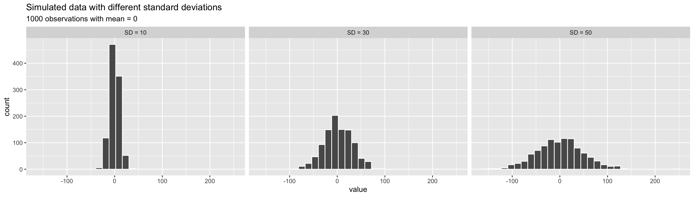

Introduction to Data & Numerical Summaries (continued)
January 5, 2026
Learning objectives (today)
By the end of class, you should be able to:
- Identify observations and variables in a dataset
- Distinguish numerical and categorical variables (discrete/continuous; nominal/ordinal)
- Describe the center of numerical data using the mean and median
- Describe the spread of numerical data using the SD and IQR
- Explain why skewness and outliers affect some summaries more than others
Intro to Data (1.2)

A motivating example: frog reproduction data1
To make ideas about data more concrete, we will work with a dataset from an evolutionary biology study on frog reproduction.
Female frogs invest energy into reproduction by producing eggs. Because energy is limited, there are natural trade-offs: - producing many small eggs versus - producing fewer larger eggs
Researchers collected data from frog egg clutches found at breeding ponds across multiple locations that differed in altitude.
The goal was to understand how reproductive investment varies across environments.
The frog study data (1/2)
| row | altitude | egg.size | clutch.size | clutch.volume | body.size |
|---|---|---|---|---|---|
| 1 | 3,462.00 | 1.95 | 181.97 | 177.83 | 3.63 |
| 2 | 3,462.00 | 1.95 | 269.15 | 257.04 | 3.63 |
| 3 | 3,462.00 | 1.95 | 158.49 | 151.36 | 3.72 |
| 150 | 2,597.00 | 2.24 | 537.03 | 776.25 | NA |
The frog study data (2/2)
| row | altitude | egg.size | clutch.size | clutch.volume | body.size |
|---|---|---|---|---|---|
| 1 | 3,462.00 | 1.95 | 181.97 | 177.83 | 3.63 |
| 2 | 3,462.00 | 1.95 | 269.15 | 257.04 | 3.63 |
| 3 | 3,462.00 | 1.95 | 158.49 | 151.36 | 3.72 |
| 150 | 2,597.00 | 2.24 | 537.03 | 776.25 | NA |
- Each observation is a row.
- Each variable is a column.
- Each cell contains a single value.
- All the observations and variables together make a data frame. The textbook will sometimes call it a data matrix.
- Missing values:
NAhere means “missing”. The clutch #150 is missingbody.size.
The frog study variables and descriptions
| variable | description |
|---|---|
| altitude | Altitude of the study site (meters above sea level) |
| latitude | Latitude of the study site (degrees) |
| egg.size | Average diameter of an individual egg (mm) |
| clutch.size | Estimated number of eggs in a clutch |
| clutch.volume | Total volume of the egg clutch (mm^3) |
| body.size | Body length of the egg-laying female frog (cm) |
Types of variables

Numerical variables
Numerical variables take on values for which mathematical operations (addition, subtraction, averaging) are meaningful.
There are two common types:
Discrete
- Take on separate, countable values
- Usually whole numbers
- Arise from counting
Examples:
- Number of eggs in a clutch
- Number of clinic visits
- Number of children in a family
Continuous
- Can take on any value within a range
- Often measured rather than counted
- Decimals are possible
Examples:
- Egg size (mm)
- Height or weight
- Blood pressure
Categorical variables
Categorical variables describe qualities or group membership rather than numerical magnitude. The values are called levels.
Nominal
- Categories have no natural ordering
- Differences are labels, not amounts
Examples:
- Species
- Blood type
- Gender identity
Ordinal
- Categories have a meaningful order
- The spacing between categories is not necessarily equal
Examples:
- Disease severity (mild, moderate, severe)
- Likert-scale responses (strongly disagree -> strongly agree)
- Education level
How are data stored, how do we use them?
- Often, data are in an Excel sheet, or a plain text file (.csv, .txt)
- .csv files open in Excel automatically, but actually are plain text
- Usually, columns are variables/measures and rows are observations (i.e. a person’s measurements)
Data in R
- We can import data from many file types, including .csv, .txt., and .xlsx
- We will cover this on a later date
- Once imported, R typically stores data as data frames, or tibbles if using the
tidyversepackage (more on this later).- For our purposes, these are essentially the same, and I will tend to use the terms interchangeably.
- These are examples of what we call object types in R.
Which type is each frog variable?
| variable | description | type |
|---|---|---|
| altitude | Altitude of the study site (meters above sea level) | Numerical (continuous) |
| latitude | Latitude of the study site (degrees) | Numerical (continuous) |
| egg.size | Average diameter of an individual egg (mm) | Numerical (continuous) |
| clutch.size | Estimated number of eggs in a clutch | Numerical (discrete) |
| clutch.volume | Total volume of the egg clutch (mm^3) | Numerical (continuous) |
| body.size | Body length of the egg-laying female frog (cm) | Numerical (continuous) |
How variable types appear in R (preview)
We are not using R in depth yet.
This slide is here to help you later connect: - the variable types we talk about conceptually, and - how R stores those variables internally.
You do not need to memorize this now.
| R type | Variable type | What it represents |
|---|---|---|
| integer | Numerical (discrete) | Whole-number counts |
| double / numeric | Numerical (continuous) | Measured values with decimals |
| factor | Categorical | Categories stored with defined levels |
| character | Categorical | Text labels |
| logical | Categorical | TRUE / FALSE values |
Summarizing numerical data (1.4)
Once data have been collected, a first step is to describe what we see.
For numerical variables, we often want to understand:
- what values are typical, and
- how much the values vary across observations.
Numerical summaries help us:
- quickly describe large datasets,
- compare groups,
- and communicate patterns clearly.
In this section, we focus on summaries for numerical variables. We will return to categorical variables later.
Two questions we often ask
For a numerical variable, two questions come up repeatedly:
- Where are the values centered?
- What is a “typical” value?
- How spread out are the values?
- Are observations tightly clustered or widely dispersed?
The summaries we introduce next are designed to answer these two questions.
Note
Some examples will show R output as a reference. You do not need to understand the R code yet — focus on the ideas.
Measures of center: the mean
The mean (or average) describes the center of a numerical variable.
It is calculated by:
- adding all observed values, and
- dividing by the number of observations.
\[ \bar{x} = \frac{x_1 + x_2 + \cdots + x_n}{n} = \sum_{i=1}^{n} \frac{x_i}{n} \]
where:
- \(x_1, x_2, \ldots, x_n\) are the observed values, and
- \(n\) is the number of observations.
The mean uses all observed values and is sensitive to unusually large or small values. All data values contribute equally, even “outliers.”
Example: mean clutch volume
Using the frog data, we can ask:
What is a typical clutch volume?
For this dataset:
- each observation is one egg clutch
- clutch volume is measured in mm\(^3\)
\[ \bar{x} = \frac{177.8 + 257.0 + \cdots + 933.3}{431} = \frac{380346.3}{431} \approx 882.5 \]
The mean clutch volume is 882.5 mm\(^3\).
The mean tells us where the data balance, but it doesn’t tell us how spread out they are.
Things to note
- The mean of a binary variable with 0/1 coding gives the proportion (relative frequency) of ones in the sample.
- The mean can be heavily influenced by “outliers.”
\({2, 7, 9} \rightarrow \bar{x} = \frac{2 + 7 + 9}{3} = 6\)
\({2, 7, 29} \rightarrow \bar{x} = \frac{2 + 7 + 29}{3} \approx 12.7\)
Distributions of frog variables

Measures of center: the median
The median describes the center of a numerical variable based on order, not magnitude.
- The median is the middle value once observations are ordered from smallest to largest.
- Half of the observations lie below the median
- Half of the observations lie above the median
If there are:
- an odd number of observations, the median is the middle value
- an even number of observations, the median is the average of the two middle values
Unlike the mean, the median is not affected by extreme values.
Example: mean vs. median
Consider these two datasets:
- \(2, 7, 9\)
- Mean = 6
- Median = 7
- Mean = 6
- \(2, 7, 29\)
- Mean = 12.7
- Median = 7
- Mean = 12.7
Only one value changed, but the mean changed a lot. The median did not.
Distributions of frog variables
- When distributions are skewed, the mean is pulled toward the tail.
- The median stays closer to where most observations lie.
A note on the mode
The mode is the most frequent value in a dataset.
- For numerical data, the mode is often unstable or uninformative
- It depends on how values are measured or grouped
- As a result, it is rarely reported for continuous variables
The mode is more useful for categorical data, which we will revisit later.
Measures of spread: standard deviation (SD) (1/3)
standard deviation is (approximately) the average distance between an observation and the mean
- An observation’s deviation is the distance between its value \(x\) and the sample mean \(\bar{x}\): deviation = \(x - \bar{x}\).
Measures of spread: SD (2/3)
- The sample variance \(s^2\) is the sum of squared deviations divided by the number of observations minus 1.
\[ s^2 = \frac{(x_1 - \bar{x})^2 + (x_2 - \bar{x})^2 + \cdots + (x_n - \bar{x})^2}{n - 1} = \sum_{i=1}^{n} \frac{(x_i - \bar{x})^2}{n - 1} \] where \(x_1, x_2, \dots, x_n\) represent the \(n\) observed values.
- The standard deviation \(s\) (or \(sd\)) is the square root of the variance.
\[ s = \sqrt{s^2} = \sqrt{\frac{1}{n - 1}\sum_{i=1}^{n}(x_i - \bar{x})^2} \]
Measures of spread: SD (3/3)
Let’s calculate the sample standard deviation for the clutch.volume from the frog dataset.
- Doing this by hand can be really time consuming!
Rdoes this easily for us.
So the standard deviation is 379.1 mm\(^3\).
For the sample of 431 frog clutches, the mean clutch volume was 882.5 mm\(^3\) (SD = 379.1 mm\(^3\)).
Empirical Rule: one way to think about the SD
For symmetric bell-shaped data, about
- 68% of the data are within 1 SD of the mean
- 95% of the data are within 2 SD’s of the mean
- 99.7% of the data are within 3 SD’s of the mean
These percentages are based off of percentages of a true normal distribution.

Measures of spread: interquartile range (IQR) (1/2)
The \(p^{th}\) percentile is the observation such that \(p\%\) of the remaining observations fall below this observation.
- The first quartile \(Q_1\) is the \(25^{th}\) percentile.
- The second quartile \(Q_2\), i.e., the median, is the \(50^{th}\) percentile.
- The third quartile \(Q_3\) is the \(75^{th}\) percentile.
The interquartile range (IQR) is the distance between the third and first quartiles. \[IQR = Q_3 - Q_1\]
- IQR focuses on the middle 50% of the data.
- Robust against outliers.
Measures of spread: interquartile range (IQR) (2/2)

Measures of spread: range
The range describes spread using only the smallest and largest values.
\[ \text{Range} = \max(x) - \min(x) \]
- Easy to compute and easy to interpret
- Not robust: it depends only on two observations
- A single unusually large or small value can dramatically change the range
Note
Because it is so sensitive to extreme values, the range is usually less informative than the SD or IQR.
Range and outliers (example)
- \(2, 7, 9\)
- \(min = 2, max = 9\)
- \(Range = 9 - 2 = 7\)
- \(2, 7, 29\)
- \(min = 2, max = 29\)
- \(Range = 29 - 2 = 27\)
Only one value changed, but the range changed a lot.
Robust estimates
Summary statistics are called robust estimates if extreme observations (outliers) have little effect on their values
| Estimate | Robust? |
|---|---|
| Sample mean | ❌ |
| Median | ✅ |
| Standard deviation | ❌ |
| IQR | ✅ |
| Range | ❌ |
- For samples with extreme values or skewed distributions, the median and IQR often provide a more stable summary of center and spread than the mean, standard deviation, or range.
BMSC 620 | Intro to Data & Numerical Summaries (continued)